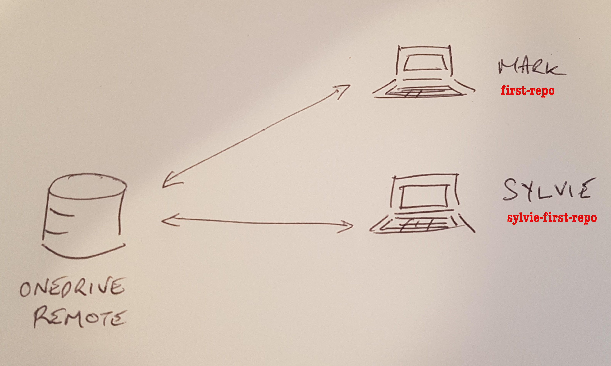

10 Collaboration 101
What is covered here simply scratches the surface. Git is extremely flexible in the workflows that can be set up. A basic approach is that of a centralised repository. This is easy to understand and is simple to set up for small teams.
The concept of remotes is introduced as is an associated workflow.
10.1 No GitHub?
GitHub is a hosting service for git repositories. It also extends some of the git functionality. They have captured the market.
Before 2005 (ish), GitHub did not exist, and it wasn’t a catastrophe. What did we do? Git has the functionality built into it to allow collaboration via hosting git repositories directly on fileservers. This is a reasonable solution for small teams with access to a common network, but it has its limits and you are probably not going to go down this path unless the infrastructure is formally managed by your IT support. Nevertheless, most bluechip organisations used this approach during the 2000’s.
Repositories that are retained outside of your local machine are referred to as remotes. It doesn’t matter whether they are hosted on LIQ, or a random file server or GitHub or BitBucket or Timbuktu. They are still known as remotes.
Remotes allow you to work on a repository collaboratively with your colleagues. This has been standard practice in software development since about 300 B.C.
We will talk about hosting remotes on fileservers here and then move on to GitHub next.
10.2 So remote
What remote (or remotes) are associated with the first-repo repository that we have been working on? You can use git remote to find out:
git remote -vNo remotes.
If at any time you want to review the remotes associated with your repository (you can have more than one remote) then invoke the command that we just used.
10.3 Initialising remotes
Let’s set up a remote on OneDrive. OneDrive is a cloud file-server, but technically we could replace OneDrive with any file-server. For example, we used to have the LIQ drive mounted as a network drive and we could use that.
Anyway, just follow along.
# back out of first-repo
cd ..
# clone
git clone --bare first-repo /Users/mark/Library/CloudStorage/OneDrive-TheUniversityofSydney\(Staff\)/first-repo.gitThe above takes the repository that we have been working on and moves the git database to OneDrive. If we look at OneDrive then we see:
cd cd '/Users/mark/Library/CloudStorage/OneDrive-TheUniversityofSydney(Staff)/first-repo.git'
pwd
## /Users/mark/Library/CloudStorage/OneDrive-TheUniversityofSydney(Staff)/first-repo.git
ls -lrta
## total 32
## drwx------@ 18 mark staff 576 17 Nov 10:52 ..
## -rw-r--r-- 1 mark staff 73 17 Nov 10:52 description
## -rw-r--r-- 1 mark staff 188 17 Nov 10:52 config
## -rw-r--r-- 1 mark staff 520 17 Nov 10:52 packed-refs
## -rw-r--r-- 1 mark staff 21 17 Nov 10:52 HEAD
## drwxr-xr-x 4 mark staff 128 17 Nov 10:52 refs
## drwxr-xr-x 36 mark staff 1152 17 Nov 10:52 objects
## drwxr-xr-x 3 mark staff 96 17 Nov 10:52 info
## drwxr-xr-x 16 mark staff 512 17 Nov 10:52 hooks
## drwxr-xr-x@ 10 mark staff 320 17 Nov 10:52 .The first thing to note is that there is no working directory.
Now let’s imagine that Sylvie has just joined the team as new Bayesian statistician. Sylvie needs to start work on the first-repo project. First, we need to get the repository onto her local machine.
The process is as follows.
- Go to you Documents folder (or wherever you intend to store your projects)
- Clone the remote
Obviously, I am working off a single laptop so I will clone the repo to some name other than first-repo. I will refer to this location as Sylvie’s repo vs Mark’s repo which is the one that I have been referencing when demonstrating examples.
In contrast to the bare repository remote, Sylvie now has the example files that we have been developing to date.
Note that I called the repo sylvie-first-repo. We can call the local version of the repo whatever we want.
cd /Users/mark/Documents/
git clone /Users/mark/Library/CloudStorage/OneDrive-TheUniversityofSydney\(Staff\)/first-repo.git sylvie-first-repo
ls -lrta
## total 40
## drwxr-xr-x 3 mark staff 96 8 Nov 11:07 ..
## -rw-r--r-- 1 mark staff 100 8 Nov 11:07 .gitignore
## -rw-r--r-- 1 mark staff 2274 8 Nov 11:07 branching.R
## -rw-r--r-- 1 mark staff 242 8 Nov 11:07 hello.R
## -rw-r--r-- 1 mark staff 38 8 Nov 11:07 myscript.R
## drwxr-xr-x 8 mark staff 256 8 Nov 11:07 .
## -rw-r--r-- 1 mark staff 138 8 Nov 11:07 readme.md
## drwxr-xr-x 12 mark staff 384 8 Nov 11:07 .gitLook at the details of the remote associated with Sylvie’s repo:
cd /Users/mark/Documents/sylvie-first-repo/
git remote -v
origin /Users/mark/Library/CloudStorage/OneDrive-TheUniversityofSydney(Staff)/first-repo.git (fetch)
origin /Users/mark/Library/CloudStorage/OneDrive-TheUniversityofSydney(Staff)/first-repo.git (push)The picture now looks like this

Over on the left we have the remote git database. On the right we have Mark who created the remote from his local repository and Sylvie who cloned the remote repository to her local machine. Git isn’t restricted to this centralised architecture (it is possible to have multiple remotes and other variations) but it is a common paradigm.
GitHub uses a different workflow that commonly (though not exclusively) relies on a project owner pulling a developers updates into a main project repository rather than the developer pushing their work directly to the project repository. We will see more about this later.
10.4 Keeping remotes up to date
For now, you can think of a remote as the hub around which collaboration revolves. As a project progresses, the local files are updated and we need to get these updates to the remote. However, others may beat us to the post in this process and thus we may be out of sync with the remote.
Again, this would mean that the state of the remote is ahead of your local repository.
In this scenario, git (and GitHub) will not allow you to send your updates to the repository unless you are sync’d. In other words, you have to be up to date in order to send your changes to the remote.
To be able to push your work up to the remote, the steps are:
- ensure that all your changes are committed to the local repository
- run
git fetchto bring down the latest changes from the remote - if necessary, merge any changes into your local repository to get up to date
- ensure (again) that all your changes are committed to the local repository
git pushyou modifications up to the remote
Here is another picture.

It sounds (and looks) a bit involved, but in practice it is simple. We will go over the steps below.
10.4.1 Fetch and push (simple case)
Sylvie updates the readme.md. First Sylvie ensures that all her local changes are committed to the repository.
cd sylvie-first-repo
git status
## On branch main
## Your branch is up to date with 'origin/main'.
##
## Changes not staged for commit:
## (use "git add <file>..." to update what will be committed)
## (use "git restore <file>..." to discard changes in working directory)
## modified: readme.md
##
## no changes added to commit (use "git add" and/or "git commit -a")
git add readme.md; git commit -m "Minor change for testing fetch"
## [main b606660] Minor change for testing fetch
## 1 file changed, 1 insertion(+)No changes have been made to the remote by anyone else (Sylvie has not pushed her changes yet) and so when we run git fetch there are no updates to be had. Therefore she can go and push the changes.
git fetch
git push
## Enumerating objects: 5, done.
## Counting objects: 100% (5/5), done.
## Delta compression using up to 8 threads
## Compressing objects: 100% (3/3), done.
## Writing objects: 100% (3/3), 322 bytes | 322.00 KiB/s, done.
## Total 3 (delta 2), reused 0 (delta 0), pack-reused 0
## To /Users/mark/Library/CloudStorage/OneDrive-TheUniversityofSydney(Staff)/first-repo.git
## b88a312..b606660 main -> mainThe examples under the git push man page are helpful and informative for further detail on the interpretation of git push.
Looking at the logs from Sylvie’s repo we see the following
git log --oneline
## b606660 (HEAD -> main, origin/main, origin/HEAD) Minor change for testing fetch
## b88a312 (tag: v3.0, origin/analysis-03) Add survival analysis
## 0f5a8df Add visualisation of results
## 3c9d4a3 Merge branch 'fix-01'
## 10297de (tag: v1.1, origin/fix-01) Add emergency fix
## 30c3a10 WIP
## 93edb00 (tag: v1.0) Add analysis stage 1
## 3257d03 Revise approach in capturing user input
## 02446ff Add newline
## 8678072 Add myscript
## b9255b8 First commit10.4.2 Fetch and push (merge required)
Heading back to our original first-repo we need to link the local with the remote.
git remote -v
## nothing (yet)To fix this we use git remote add which, predictably tells git to configure a link between a local and remote version of the repository. This is a one time process and once we have set the remote, we do not need to do it again until we need to add a new remote.
git remote add origin /Users/mark/Library/CloudStorage/OneDrive-TheUniversityofSydney\(Staff\)/first-repo.git
git remote -v
## origin /Users/mark/Library/CloudStorage/OneDrive-TheUniversityofSydney(Staff)/first-repo.git (fetch)
## origin /Users/mark/Library/CloudStorage/OneDrive-TheUniversityofSydney(Staff)/first-repo.git (push)The use of the word origin below is just convention to indicate the primary remote. It is a shortcut for the full directory path (or URL) for the remote. You can call the remote anything you want but most people stick with the convention of origin, which is a bit like the GitHub convention of using main for the main branch. If you were to add a second remote, you would call it something other than origin.
We see that the remote has been added for both push and fetch. However, if we run log, we do not see Sylvies changes.
git log --oneline --all
## b88a312 (HEAD -> main, tag: v3.0, analysis-03) Add survival analysis
## 0f5a8df Add visualisation of results
## 3c9d4a3 Merge branch 'fix-01'
## 10297de (tag: v1.1, fix-01) Add emergency fix
## 30c3a10 WIP
## 93edb00 (tag: v1.0) Add analysis stage 1
## 3257d03 Revise approach in capturing user input
## 02446ff Add newline
## 8678072 Add myscript
## b9255b8 First commitEqually, our readme.md file is as it was.
cat readme.md
## # first-repo
##
## A demo markdown file for the git workshop.
##
## Arbitrary line of text.
##
## Contains standalone R scripts.Before we can go any further, we need to make an existing local branch track a specific remote branch which is achieved with
git fetch # pulls down information on the branches in the remote
## remote: Enumerating objects: 5, done.
## remote: Counting objects: 100% (5/5), done.
## remote: Compressing objects: 100% (3/3), done.
## remote: Total 3 (delta 2), reused 0 (delta 0), pack-reused 0
## Unpacking objects: 100% (3/3), 302 bytes | 302.00 KiB/s, done.
## From /Users/mark/Library/CloudStorage/OneDrive-TheUniversityofSydney(Staff)/first-repo
## * [new branch] analysis-03 -> origin/analysis-03
## * [new branch] fix-01 -> origin/fix-01
## * [new branch] main -> origin/mainand now we can see Sylvies mod in the repository history.
git log --oneline --all
## b606660 (origin/main) Minor change for testing fetch
## b88a312 (HEAD -> main, tag: v3.0, origin/analysis-03, analysis-03) Add survival analysis
## 0f5a8df Add visualisation of results
## 3c9d4a3 Merge branch 'fix-01'
## 10297de (tag: v1.1, origin/fix-01, fix-01) Add emergency fix
## 30c3a10 WIP
## 93edb00 (tag: v1.0) Add analysis stage 1
## 3257d03 Revise approach in capturing user input
## 02446ff Add newline
## 8678072 Add myscript
## b9255b8 First commitWe want to stay in sync with the main branch so we tell git via
git branch --set-upstream-to=origin/main main # links a local with remote branchChecking the status we see that the change that Sylvie pushed has left us out of sync.
git status
## On branch main
## Your branch and 'origin/main' have diverged,
## and have 1 and 1 different commits each, respectively.
## (use "git pull" if you want to integrate the remote branch with yours)
##
## nothing to commit, working tree cleanI can still work on the files, e.g. adding a new line to the readme.md:
# first-repo
A demo markdown file for the git workshop.
Arbitrary line of text.
Contains standalone R scripts.
Mark makes a change.stage and commit:
git add readme.md
git commit -m "Add a change"However, if I try to push my change anyway, git will barf:
git push
## To /Users/mark/Library/CloudStorage/OneDrive-TheUniversityofSydney(Staff)/first-repo.git
## ! [rejected] main -> main (non-fast-forward)
## error: failed to push some refs to '/Users/mark/Library/CloudStorage/OneDrive-TheUniversityofSydney(Staff)/first-repo.git'
## hint: Updates were rejected because the tip of your current branch is behind
## hint: its remote counterpart. If you want to integrate the remote changes,
## hint: use 'git pull' before pushing again.
## hint: See the 'Note about fast-forwards' in 'git push --help' for details.This is what I was referring to earlier. Git will try to prevent you from screwing up the remote without some strenous effort on your part. It would be nice if git had told us what was different, but it forces us to do this via the following:
git fetch # this was done previously, but just to be clear that you need to do a fetch first
git diff main origin/main
## diff --git a/readme.md b/readme.md
## index ce5b5e9..af3fd05 100644
## --- a/readme.md
## +++ b/readme.md
## @@ -6,6 +6,6 @@ Arbitrary line of text.
##
## Contains standalone R scripts.
##
## -Mark makes a change.
## +Sylvie made a change.You can see the line that I introduced and also the change that Sylvie added and committed to the remote. There are a few options to resolve this. Most people use git pull which runs the two steps as one. I prefer to be explicit and feel like it might be a bit safer to split the process up into a fetch and then a merge, although I think I am in the minority.
git fetch
git merge
## Auto-merging readme.md
## CONFLICT (content): Merge conflict in readme.md
## Automatic merge failed; fix conflicts and then commit the result.Git offers another command git pull that effectively combines git fetch with git merge. The benefit of using git fetch is that it will update your local repository but will not make any changes to your working directory (see Section 5.1.2.1 for a reminder).
Git couldn’t merge our changes so I am forced to resolve them. Git introduces some markers into the problem files so that I know what I need to fix:
cat readme.md
# first-repo
A demo markdown file for the git workshop.
Arbitrary line of text.
Contains standalone R scripts.
<<<<<<< HEAD
Mark makes a change.
=======
Sylvie made a change.
>>>>>>> refs/remotes/origin/mainIn this case I decide to keep both modifications so I amend the readme.md file as follows:
# first-repo
A demo markdown file for the git workshop.
Arbitrary line of text.
Contains standalone R scripts.
Mark makes a change.
Sylvie made a change.Then I can stage and commit the files and the remote will allow me to push them.
git add readme.md
git commit -m "resolve merge issue"
# [main d53028e] resolve merge issue
git push
## Enumerating objects: 10, done.
## Counting objects: 100% (10/10), done.
## Delta compression using up to 8 threads
## Compressing objects: 100% (6/6), done.
## Writing objects: 100% (6/6), 577 bytes | 577.00 KiB/s, done.
## Total 6 (delta 4), reused 0 (delta 0), pack-reused 0
## To /Users/mark/Library/CloudStorage/OneDrive-TheUniversityofSydney(Staff)/first-repo.git
## b606660..d53028e main -> mainGoing back to sylvie-first-repo, Sylvie can simply fetch and then merge and we will both be up to date.
The final history will look something like:
git log --oneline --all
## * d53028e (HEAD -> main, origin/main, origin/HEAD) resolve merge issue
## |\
## | * b606660 Minor change for testing fetch
## * | 8e2d711 Add a change
## |/
## * b88a312 (tag: v3.0, origin/analysis-03) Add survival analysis
## * 0f5a8df Add visualisation of results
## * 3c9d4a3 Merge branch 'fix-01'
## |\
## | * 10297de (tag: v1.1, origin/fix-01) Add emergency fix
## * | 30c3a10 WIP
## |/
## * 93edb00 (tag: v1.0) Add analysis stage 1
## * 3257d03 Revise approach in capturing user input
## * 02446ff Add newline
## * 8678072 Add myscript
## * b9255b8 First commit10.5 Remotes and branches
One key aspect that I have not mentioned to date is for the scenario where new branches are created in a local repository.
To list all known branches in both your local repository and the remote (or remotes)
git branch -a
## analysis-03
## fix-01
## * main
## remotes/origin/analysis-03
## remotes/origin/fix-01
## remotes/origin/mainLet’s say that I am asked to develop a new analysis. Learning from past mistakes, he creates an analysis-04 branch and adds the following content to run a non-parameteric surivival analysis.
git branch analysis-04To complete the analysis, the following is added to the branching.R script, which is tested, staged and committed.
message("\n\nANALYSIS OF SURVIVAL OUTCOME (UNSTRATIFIED, NON-PARAMETRIC):\n")
lm4 <- survdiff(Surv(w, evt) ~ x, data = d)
print(lm4)Following the earlier process, Mark then switches back to main and merges in the new analysis.
git checkout main
git merge analysis-04
## Updating d53028e..0576ed9
## Fast-forward
## branching.R | 5 +++++
## 1 file changed, 5 insertions(+)and then pushes the change up to the remote repository.
git push
## Enumerating objects: 5, done.
## Counting objects: 100% (5/5), done.
## Delta compression using up to 8 threads
## Compressing objects: 100% (3/3), done.
## Writing objects: 100% (3/3), 352 bytes | 352.00 KiB/s, done.
## Total 3 (delta 2), reused 0 (delta 0), pack-reused 0
## To /Users/mark/Library/CloudStorage/OneDrive-TheUniversityofSydney(Staff)/first-repo.git
## d53028e..0576ed9 main -> mainThis does not establish the analysis-04 branch within the remote, which may or may not be a problem (usually not) but it is worth being aware of. Other users will not be able to get access to the evolution of the files that occurred on the development branch. To push the analysis-04 branch we use:
git push --set-upstream origin analysis-04
## Total 0 (delta 0), reused 0 (delta 0), pack-reused 0
## To /Users/mark/Library/CloudStorage/OneDrive-TheUniversityofSydney(Staff)/first-repo.git
## * [new branch] analysis-04 -> analysis-04
## branch 'analysis-04' set up to track 'origin/analysis-04'.And now uses can fetch and review this branch within the context of their local repositories.